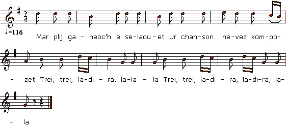
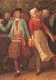

|
Son Anaik Rozmar hag Ivon Gwilho 1. Mar plij ganeoc'h e selaouet Ur chanson nevez kompozet Trei, trei, ladira, lalala Trei, trei, ladira, ladira, lala 2. Ur chanson nevez kompozet Da Annaig Rozmar eo eo graet 3. Ar Rozmar kozh a lavare D'e verc'h Anna, un deiz e oe : 4. "Ma merc'h Annaig, mar am c'haret, Da Brad-Frajil nan efet ket 5. 'N aotrou Richo a vo eno Gwashañ denjentil zo er vro" 6. Annaig Rozmar a respontas D'ar Rozmar kozh 'vel m'her c'hlevas : 7. "Droug ha mad ganin neb gomzo Da Brad-Frajil me a yelo 8. Ma ve sonerien e tañsin-me Ma ne ve ket me gano d'hê 9. Me ret mont fete da Brad-Frajil Da son ar bal d'an dudjentil 10. Da son ar bal ha 'ont dre dañs D'an dudjentil ha d'an noblañs 11. Pa oa gant an hent o vonet Yvon Gwilho 'deus rekontret 12. "'Vonig, ma evezhafe-te Me ho c'hemero goude-se 13. - Me n'on ket 'ont riskl ma buhez Evit gounit un tok nevez 14. - 'Vonig ma evezha bepred Me mo deoc'h un tok ha boned" 15. 'N aotrou Richo a lavare D'Ivon Gwilho 'ar leur nevez : 16. "Ivon Gwilho, mar am c'haret, Ho tañserez din-me prestfet 17. - Ma dañserez din n'ho po ket Na c'hwi, na den all ebet 18. Kar digant he zad 'm eus hi bet Har d'ar gêr dezhañ vo rentet 19. - Klev, eme'añ, ar c'hokin mihiek Ha nan eus ket pemp kwenneg 20. - Ha ven ur c'hokin mihiek-me 'Vit lipat da blas me n'on ket 21. O lipat da blas me n'on ket Na plas a blac'hetaer ebet" 22. 'N aotrou Richo a respontas Da Ivon Gwilho p'her c'hlevas : 23. "A-barzh na vezo noz fete Ho paeo-te ar c'homzoù-se" 24. 'N aotrou Richo a lavare D'e sonerien hag en deiz-se : 25. "Pa gomañso an noz troublañ, Ma sonerien, son't ar bravañ 26. Ma c'houvein piv vo ar sotañ Da chom amañ da ziwe'añ" 27. Ivon Gwilho a respontas D'an aotrou Richo p'her c'hlevas : 28. "Tol't pled aotrou, c'hwi ve 'r sotañ Da chom amañ da ziwe'añ" 29. Annaig Rozmar a ouele Yvon Gwilho he c'honsole 30. Annaig Rozmar a lavare Da 'von Gwilho el leur nevez : 31. "Ivonig-me em evesavete Me ho c'hemero goude-se" 32. Yvon Gwilho a lavare Da Naig Rozmar el leur nevez : 33. "Tapet krog barzh-barzh ma chupenn Ma c'hoariin bazh an daou-benn 34. Kriz a galon neb na ouelje 'N Prad-Frajil neb a vije [2] 35. O welet ar yeot o ruziañ Gant gwad 'n dudjentil o skuilhañ 36. Gant gwad 'n dudjentil o skuilhañ Ivon Gwilho oc'h o lazhañ 37. Ivon Gwilho a lavare Ti Rozmar kozh pa arrue : 38. "Setu aze ho merc'h Annaig Panevedon-me ne va ket" 39.Ar Rozmar kozh a lavare D'e verc'h Annaig un deiz oe : 40. "Laret-hu din ma merc'h e gwir 'M eus klevet oc'h disenoret ? 41. - O, sur ma zad, me ne n'on ket Ivon Gwilho 'neus empechet" 42. Ar Rozmar kozh a lavare D'e verc'h Annaig un deiz oe : 43. "Dal ma merc'h Annaig an alc'houez Rey de'añ ar gwerzh un tog nevez 44. Annaig Rozmar a respontas Da Rozmar kozh pa her c'hlevas : 45. "Gwerzh un tog nevez, 'me'i, ne vo ket Me mo de'añ tog ha boned 46. Me mo de'añ tog ha boned Me e gemero da bried 47. - O sur, ma merc'h, na refet ket C'hwi zo perc'henn da bemp mil skoed [3] 48. C'hwi zo perc'henn da bemp mil skoed Hag eñ n'en deus ket pemp kwenneg 49. - Ha pa 'n efe ket ur gwenneg Me hen c'hemero bepred" 50. Ivon Gwilho en deus goune'et E Prad-Frajil e ve'añ bet 51. Perc'henn pemp mil skoed leve Ha eñ n'en doa netra ebet |
Chanson d'Annick Rosmar et d'Yves Guillou 1. S'il vous plait, vous écouterez Un chant qu'on vient de composer Trei, trei,ladira, lalala Trei, trei,ladira, ladira, lala. 2. Composé, hier au plus tard Au sujet d'Annaïk Rosmar. 3. Le vieux Rosmar un jour disait, A sa fille Anne, fort inquiet: 4. - Annick, vous m'aimez, paraît-il: N'allez-donc pas â Prat-Fragil. 5. Sire Richaud s'y rend aussi, Le pire noble du pays.- 6. A quoi sa fille lui répond Sans qu'il puisse en dire plus long: 7. - Mais laissez-donc les gens jaser! A Prat-Fragil je veux aller, : 8. S'il y a des sonneurs, pour danser Et sinon, moi, je chanterai. 9. C'est comme une mission en somme: Donner l'aubade aux gentilshommes: 10. Sonner et les faire danser Ces nobles et tous leurs quartiers. - 11. Voilà qu'elle rencontre en rou- Te un soupirant, Yves Guillou. 12. - Cher Yves, me défendrez-vous Si je fais de vous mon époux? 13. - Bien sûr, à qui risque sa peau, L'on doit donner plus qu'un chapeau. 14. - Toute la vie, défendez-moi: Le bonnet sera de surcroît. - 15. A l'aire neuve Sieur Richaud S'adresse à Guillou par ces mots: 16. - Yves Guillou, faisons affaire: Cédez-moi votre cavalière! 17. - Ma danseuse n'est ni pour vous, Ni pour personne et voilà tout. 18. Car son père me l'a confiée Jusqu'à ce qu'elle soit rentrée. 19. - Mais, écoutez-le ce morveux, Ce sans-le-sou, ce prétentieux! 20. - J'aime bien mieux être un morveux, Qu'être à votre place, Monsieur. 21. Être à votre place, ça non! Je hais les coureurs de jupons. - 22. Richaud aussitôt répondit En le provoquant comme suit: 23. - Quand il fera nuit, mon garçon Vous m'en aurez rendu raison - 24. Le sieur Richaud, plein de rancur Se tourne alors vers les sonneurs: 25. - Vous jouerez vos airs les plus beaux Quand il fera nuit, pas plus tôt, 26. Qu'on voie s'il en est d'assez fous Pour être encor là, malgré tout. - 27. Notre Yves s'avance aussitôt Et tient ce langage à Richaud: 28. - Espérons que vous ne serez Pas parmi ceux qui vont rester. - 29. Annick pleurait à chaudes larmes, Notre Yves calmait ses alarmes. 30. A l'aire neuve, elle a promis D'en faire, à nouveau, son mari: 31. - Mon Yvon chéri, défends-moi, Je n'aurai d'autre époux que toi. - 32. A l'aire neuve, Yves Guillou Se comportait en digne époux: 33. - Annick, gardez-moi mon gilet Je vais jouer du bâton ferré. - 34. Quel cur endurci n'aurait-il Versé de pleurs au Prat-Fragil, [2] 35. En voyant l'herbe s'empourprer Du sang que les nobles versaient, 36. Du sang que les nobles versaient Tandis qu'Yves les massacrait. 37. Yves Guillou disait tout fier En entrant chez le vieux Rosmar: 38. - Que votre bien vous soit rendu! Mais sans moi vous ne l'aviez plus! - 39. Le vieux Rosmar disait tout bas A sa fille Annick ce jour-là: 40. - La rumeur est-elle fondée, Revenez-vous déshonorée? 41. - Certes non, père, pas du tout, Grâce à ce cher Yves Guillou! - 42. C'est alors que Rosmar a dit S'adressant à sa fille Annick: 43. - De mon coffre voilà la clef: Ce chapeau neuf, cours l'acheter! - 44. Ce qu'entendant Annick bondit Et son père répondit: 45. - Un chapeau? Pourquoi pas, ma foi, Avec un bonnet de surcroît! 46. Chapeau, bonnet... Ce n'est pas tout. Je vais le prendre pour époux! 47. - Voyons, Annick, n'y pensez plus! Vous possédez cinq mille écus: [3] 48. Cinq mille écus qui sont à vous, Tandis que lui n'a pas cinq sous. 49. - Il n'aurait pas un sou vaillant, Je l'épouserais tout autant. 50. A Prat-Fragil notre Guillot Comme on le voit, a gagné gros: 51. Cinq mille écus de revenus A qui n'avait rien sont échus. Traduction: Christian Souchon (c) 2011 |
Song of Ann Rosmar and Yves Guillou Contre l'avis de son père, Annick Rosmar a envie d'aller danser à l'aire neuve de Prat-Fragil, où se trouvera toute la noblesse du pays. En chemin, elle rencontre Yvon Guillou, et lui demande de la protéger ; en échange, elle le prendra pour époux. Yvon se laisse convaincre. Ils arrivent à la fête, et le seigneur Richaud demande à Yvon de lui prêter sa jolie cavalière. Yvon refuse, ce qui met en colère le seigneur, qui jure de se venger. A la fin de la soirée, un combat s'engage. Yvon Guillou en sort vainqueur, et ramène Annick chez son père, saine et sauve. Le père craint que sa fille n'ait été déshonorée, mais elle raconte que non, parce qu'Yvon l'a protégée et qu'elle souhaite le prendre pour époux. Le père refuse d'abord de donner sa fille, avec une rente de cinq mille écus, à un garçon qui n'en a pas cinq. Mais il finit par céder. Rédigé par M. Pierre Quentel (cf.liens)  Song of Ann Rosmar and Yves Guillou Against his father's wish, Nancy Rosmar decides that she will go to the new threshing floor dance at Prat Fragil, where all the nobs of the district will gather. On her way she encounters Yves Guillou and asks him for protection. Against her promise to marry him, she talks him into accepting. When they arrive, Sir Richaud summons Yves to lend him his fair partner. Yves refuses. Sir Richaud gets angry and swears to take his revenge. At nightfall a struggle begins. Yves Guillou is the victor and takes home Nancy safe and sound. The father fears lest his daughter would have been dishonoured, but she says she was not thanks to Yves who protected her and whom she has chosen for her husband. Her father is at first reluctant to give his daughter with a 5 thousand crown income to a lad who has not 5 crowns to spare, but eventually he surrenders. Synopsis by M. Pierre Quentel (see links) |
|
[1] Marguerite Philippe (Marc'harid Fulup, 1837 - 1909), principale informatrice de François-Marie Luzel, a été enregistrée par François Vallée en 1905: voir Le siège de Guingamp. [2] Formule usuelle de lamentation. Cf. La Peste d'Elliant, commentaire, "L'authenticité de la gwerz" (Bien que cette pièce soit présentée comme une "chanson" (breton "son"), le sujet dramatique en fait plutôt une "gwerz" (complainte). [3] Note de H. Guillerm: "Skoet": c.-à-d. 3 fr., donc cinq mille écus, soit 15.000 frs [de 1905]. |
[1] Marguerite Philippe (Marc'harid Fulup, 1837 - 1909), main informant of François-Marie Luzel, was recorded when singing by François Vallée in 1905: cf. The siege of Guingamp. [2] A usual lamenting phrase. Cf. the Plague in Elliant, comments, "A genuine old gwerzgwerz" (In spite of its being presented as a "chanson" (Breton "son") in the 1st verse, the dramatic plot of the story makes of it, in fact, a "gwerz" (a lament). [3] Note by H. Guillerm: "Skoed": i.e. 3 francs. Consequently 5.000 skoeds were equivalent to 15.000 frs [in 1905]. |